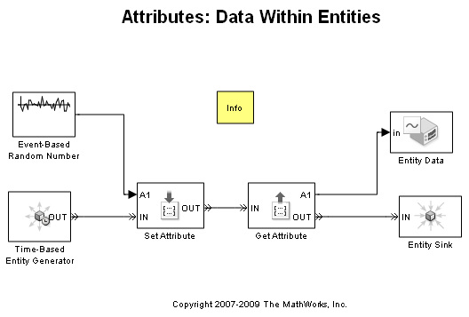

Attributes: Data Within Entities
Contents
Overview
This model demonstrates how entities carry data from block to block. A piece of such data is called an attribute. The attribute can be read by a subsequent block.
Structure
The Set Attribute block assigns an 'EntityData' attribute in every entity that arrives at its input port. The value for this attribute comes from the Event-Based Random Number block connected to the A1 port of the Set Attribute block. The Get Attribute block reads the value of the 'EntityData' attribute of each arriving entity and writes this value to the A1 signal output port.